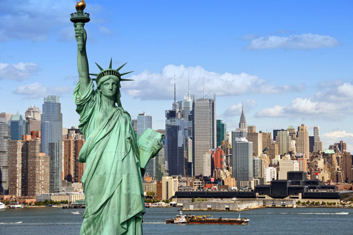

New York
|  |
Statue of Liberty:"The Statue of Liberty Enlightening the World" was a gift of friendship from the people of France to the United States and is recognized as a universal symbol of freedom and democracy. The Statue of Liberty was dedicated on October 28, 1886. It was designated as a National Monument in 1924. Employees of the National Park Service have been caring for the colossal copper statue since 1933. |
 |
Empire State Building:The Empire State Building. Located in the center of Midtown Manhattan, our 86th and 102nd floor observatories provide unforgettable 360° views of New York City and beyond. Whether you’re in town for a week or a day, no visit to NYC is complete without experiencing the top of the Empire State Building. |